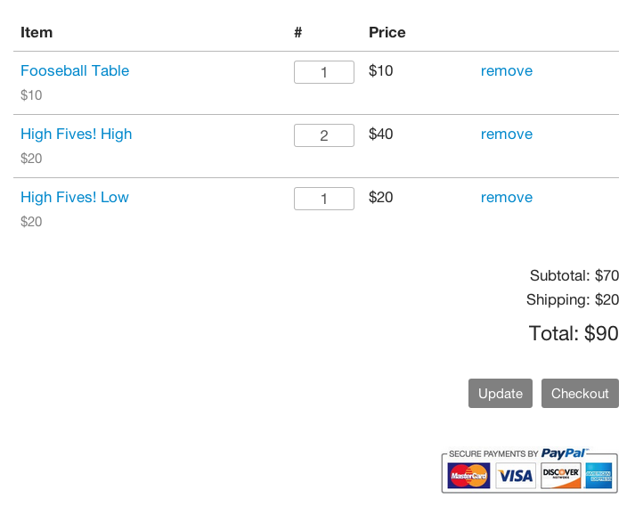

WP Shopping Cart
A simple PayPal shopping cart for WordPress.
A simple PayPal shopping cart for WordPress.
WordPress Shopping Cart makes it easy for visitors to:
This is not a plugin. A working knowledge of PHP and WordPress functions is required.
Add wp-shopping-cart.php to your theme folder and call it from your functions.php file, or copy-and-paste it directly into the file. Add the img folder into your theme folder.
Replace the variables with your information:
$paypal_account - Your PayPal email address$cart_icon - An icon for your shopping cart link, if you have one$url_store - The URL of your store$url_cart - The URL of your shopping cart$url_update - The meta info/URL when the cart is updated$url_success - The meta info/URL when the checkout is successfulCreate pages for your products, and use the [add_to_cart] shortcode to create links.
Shortcode variables:
Example:
[add_to_cart product="T-Shirt" price="20" options="Size=Small|Med|Large"]
Create a shopping cart page, and use the [checkout_cart] shortcode to embed a cart.
Add a link to the cart anywhere on your site using the [checkout_cart_link] shortcode or <?php echo checkout_cart_link(); ?>.

WordPress Shopping Cart was designed to work with the Kraken boilerplate, Kraken for WordPress, and Tables.
It should work great with other themes, too. You may just need to adjust the styling a little bit.